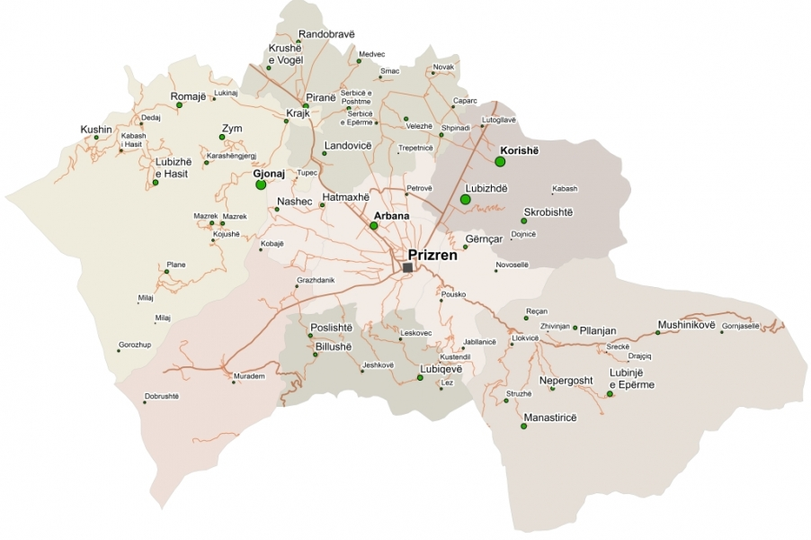

Gjeografia e Prizrenit
Prizreni me sipërfaqe prej 640 km2 (5.94 % të territorit të Kosovës) gjendet në jugperëndim të Kosovës dhe me 74 vendbanime dhe me 175 000. Prizreni me së shpeshti quhet: Ana e Prizrenit, bazeni i Prizrenit ose Rrafshi i Dukagjinit. Kufizohet me Komunat e Gjakovës, Rahovecit, Suharekës, Shtërpces dhe Dragashit si dhe me Shqipërinë dhe Maqedoninë.
Rafshi i Prizrenit gjendet në lartësi mbidetare rreth 400 metra dhe disa maje të Sharrit kalojnë lartësinë 2000 m të lartësisë mbidetare. Klima e qytetit është jashtëzakonisht e llojllojshme.
Në viset e ulta për shkak të ndikimit të klimës mesdhetare dhe verave shumë të nxehta të korrurat janë ndër të parat në Europën juglindore me përparësitë e pakrasuheshme për kulturat bujqësore: Hardhija e rrushit, pemët dhe perimet.
Përmes anës së Prizrenit kalon rruga më e shkurter që bashkon pjesën qendrore të gadishullit Ballkanik me detin Adriatik. Kjo rrugë, e dia për arsye politike nga e kaluara sot nuk ka rëndësi aq të madhe , është një rast i mirë që me valorizimin e saj të shfrytëzohen të gjitha përparsitë e saj, duke marrë parasysh që në të kaluarën ka pasur ndikim primar në zhvillimin e Prizrenit.
Ato janë të rrethuara pothuaj nga të gjitha me bjeshkë të larta dhe paraqesin një tërësi të ndarë qartas. Fushat e Kosovës dhe Dukagjinit janë në pjesën e mesme të gadishullit Ballkanik. Kosova dhe me të edhe rrethi i Prizrenit ka karakter tranzit ndërmjet regjioneve Panonike dhe Pontike në njërën anë dhe regjionit të Egjeut-Adriatikut në anën tjetër.